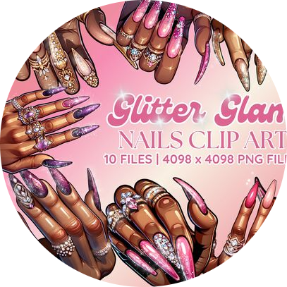

|  | Party to nailsHello les amis bienvenue sur la page , je me présente party to nails nous sommes spécialisées dans la vente de press nails et dans le prothétistes ongulaire Les ongles chromés changent la donne dans le secteur des ongles », déclare Tinu Bello, manucure de renom. « Ils offrent un charme incomparable, imitant de près la nature réfléchissante et brillante du métal. Contrairement aux paillettes ordinaires, qui dispersent la lumière, les ongles chromés ont un éclat uniforme qui capture, créant un effet éthéré. |
details |
description |
| Ashley | Morelle |
| Duck nails | French nails |